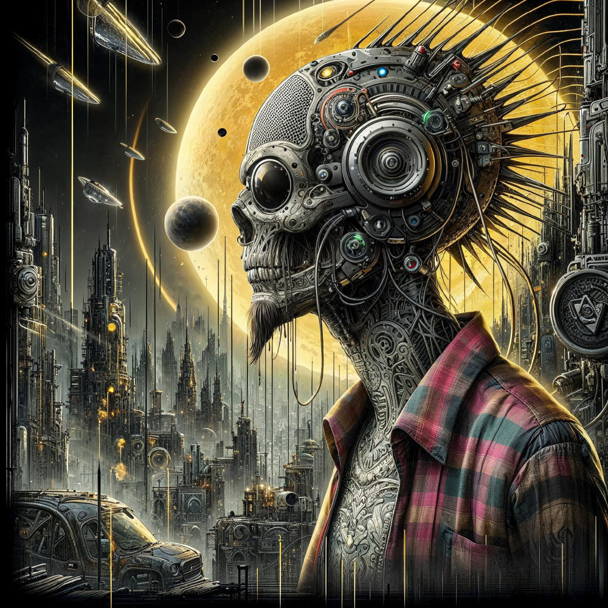
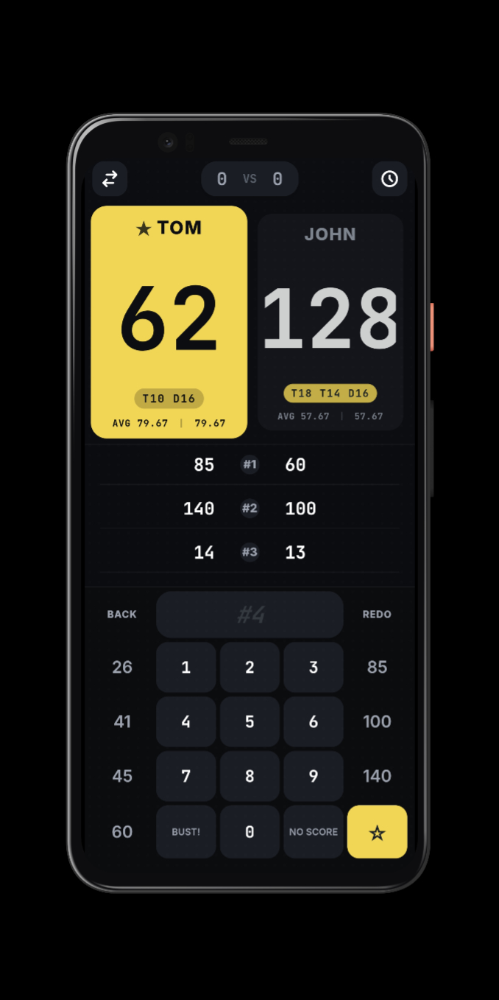
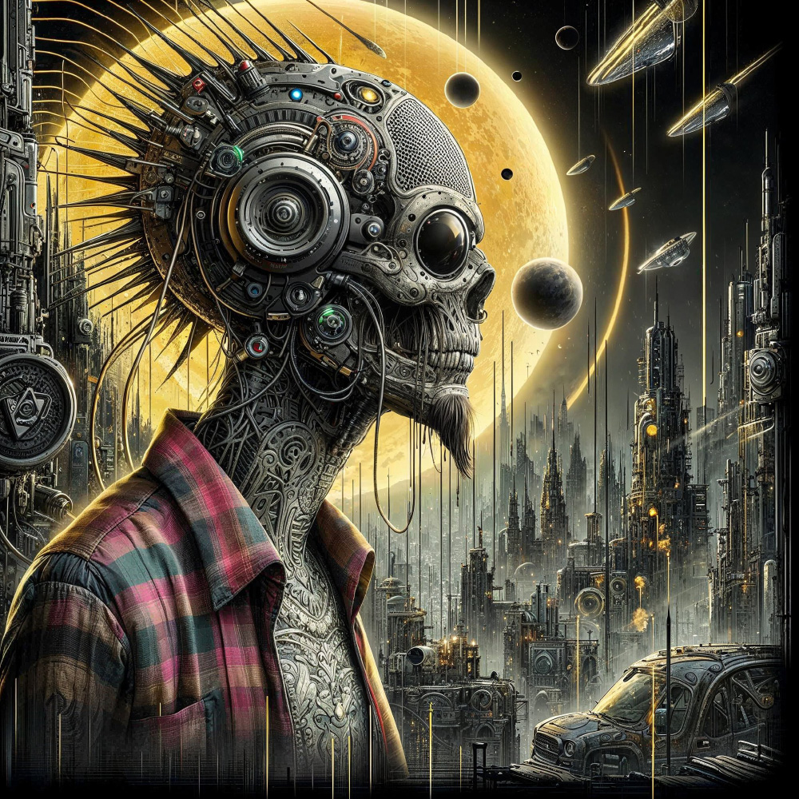

Skooride äpp noolemängijatele — kiire, mugav, eestikeelne. Ilma reklaamideta, ilma netiühenduseta, ilma jamata.
Pleilist · 98 lugu YouTube'is →
Maasikas lebas raugelt köögilaual ning uudistas ümbrust. Kõik oli nagu tavaliselt — banaanikleepekatega kaetud külmkapp undas vaikselt, seinakell keerutas eri mõõtu kätega ja koorimise eest peitu pugenud kartul piilus kapi alt oma nööpsilmadega arglikult välja…
Ennemuiste elas ühes Rõuge järves suur ja väga vana kala, keda ümbruskonna rahvas kutsus Onuhelejakajakõlariks. Ükskord sõitnud järvest üks rätsep jalgrattaga mööda…
Vapper räimerull ärkas oma plastikust voodis ja hõõrus uniselt silmi. Ümberringi oli tühjus. "Kuhu kõik on kadunud?", mõtles ta ja tõusis istukile. Ta pühkis põlvedelt sibulapuru…
Triibuliste trakspükstega karu sõidab kolmerattalise jalgrattaga ümber maja ja mõmiseb tähtsalt. Muuseumis oli palav. Valvurimutt kardab külma ja kütab nigu pöörane…
Puhub varba peale ja lausub paar nõiasõna. Kapi alt tuleb valges kitlis hiir, prillid ninal ja stetoskoop ümber kaela. Raputab haigele kohale rohelist pulbrit ja jala ümber tekib vikerkaar…
Vaatab aknalaua alla. Seal on väike majake, korsten tossab ja aias mängivad kärbselapsed Pipi mängu. Sitikad märkavad mind, jooksevad suure kisaga majja ning uks tõmmatakse prõmmdi kinni…
Kõik käivad tasku kallal miskipärast ja laud on juustupuru täis. Kui omanik tuleb, siis visatakse juustukera üle aia ja kõik vaatavad süütute silmadega otsa. Aia tagant tuleb nördinud kodanik, suur sinine muhk peas…
"TRA!" röögatas sekretär ja vandus pikalt ning filigraanselt vene keeles. Kabinettides saabus haudvaikus, kuulda oli ainult vaikset tilkumist raamatupidaja laua alt — pensionieelikust memmeke oli vaga ja pelglik inimene ning ehmus kergesti…

Hi — I'm Imre. Before anything else, a few lines on why this page exists. I've spent thirty years building digital things, and slowly come around to the idea that one personal homepage with all of them on it is still a better way to show up than any channel on someone else's platform.
By day I build xml. In my spare time I make funny sounds and texts. On weekends I walk around and making pictures. The four sections above are connected — a picture leads to a piece of text, the text points at a sound, the sound is hosted by code that uploads the next picture.